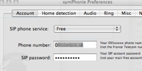

Simple à configurer

symPhonie est conçu pour être simple à configurer:
entrez votre numéro de téléphone et votre mot de passe, et c'est tout.
symPhonie fournit une configuration simplifiée
pour le service "Freephonie" de l'ISP "Free".